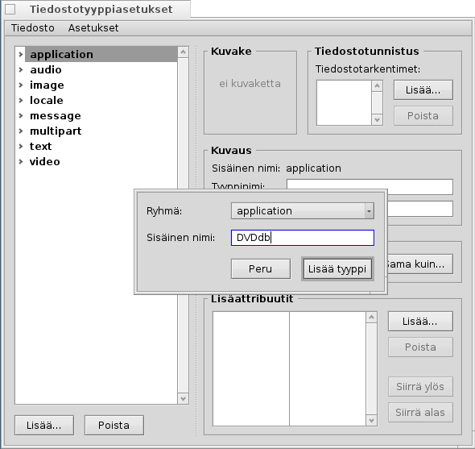
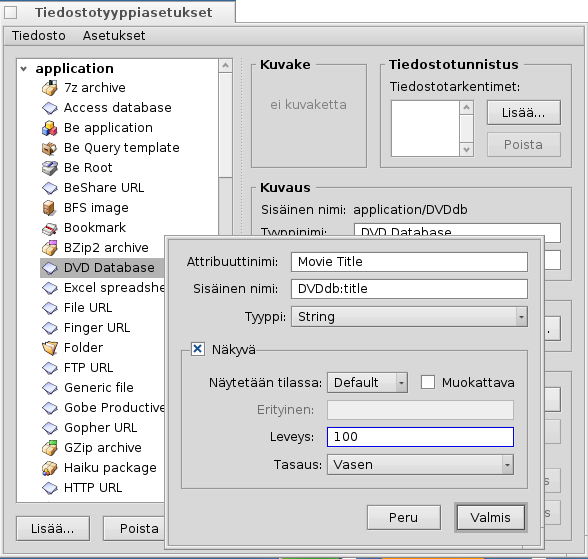

| Hakemisto |
|
Esikäsittelyt Oman tiedostotyypin luominen Kuvake Tiedostotunnistus Kuvaus Ensisijainen sovellus Lisäattribuutit Indeksointi Tietojen lisääminen Tietokannan kysely |
Työpaja: Tiedostotyypit, attribuutit, indeksi ja kyselyt
Tämä on työpaja valikkojen Attribuutit, Kyselyt, Indeksi ja Tiedostotyypit-räätälöinnin käyttämisestä. Esimerkkinä rakennamme tietokannan DVD-kirjaston seuraamiseksi.
 Esikäsittelyt
Esikäsittelyt
Päättäkäämme aluksi, mikä tiedostotyyppi ja mitkä attribuutit palvelisivat tarpeitamme. Alunperin halusin käyttää Kirjanmerkki-tiedostoa linkillä elokuvien IMdB-sivulle, mutta Haikussa ei ole tällä hetkellä "kirjanmerkittävää" webbiselainta kuten BeOS-käyttöjärjestelmän NetPositive, joten tulin tähän: Tiedosto itse on JPEG-kuva elokuvan kannesta.
WebPositive-ohjelmalla Haikulla on nyt kirjanmerkkitiedostoja käyttävä selain, joten voit aivan hyvin käyttää kirjanmerkkitiedostoa eikä kuvaa perustiedostotyyppinä tietokantatiedostoillemme.
Oli miten tahansa, näihin tiedostoihin lisäämme pari attribuuttia. Tässä on päätettävä, että haluammeko kysellä sitä myöhemmin (silloin meidän olisi lisättävä se indeksiin) ja jos niin, mitä attribuuttityyppiä sen pitäisi olla. Numerot (int, float) voidaan evaloida eri tavalla kuin teksti (</=/> vs. on/sisältää/alkaa jollakin).
Tässä on attribuutit, jotka haluaisin nähdä DVD:stäni:
- Elokuvaotsikko
- Tyylilaji
- Verkko-osoite esimerkiksi IMdB-sivulle
- Ohjaaja/Näyttelijät
- Juoni
- Arvosanani 1 ... 10
- Koordinaatit omassa hyllyssäni, esimerkiksi A2, B3, jotta löydän DVD:n myös oikeassa elämässä :)
- Jos niin, kuka on lainannut levyn...
Oman tiedostotyypin luominen
Aloita Tiedostotyypit-asetukset, ja napsauta painiketta vasemmalla olevan hierarkialuettelon alla. Pieni valintaikkuna avautuu ja voit määritellä, missä MIME-ryhmässä uusi tiedostotyyppisi sijaitsee. Voit myös luoda kokonaan uuden ryhmän. Laittakaamme se "sovelluksiin" ja asetaan "Sisäiseksi nimeksi" DVDdb.
Nyt avautuu paneeli uudelle DVDdb-tiedostotyypillesi:

Kuvake
Kaksoisnapsauta kuvakelähdettä avataksesi Kuvakemaatti-sovelluksen tiedostotyyppisi kuvakkeen suunnittelemiseksi. Voit myös raahata & pudottaa kuvakkeen toisentyyppisestä kuvakelähteestä, ehkä alkuna muokatulle versiolle.
Tiedostotunnistus
Voit lisätä loppuliitteitä kuten .txt, .jpg, .mp3 tiedostojen tunnistamiseksi tarkentimen avulla. Ne ovat hyödyllisiä, kun työskennellään tiedostojen kanssa, jotka ovat lähtiöisin järjestelmistä ilman MIME-tyypitystä. Emme tarvitse sitä esimerkissämme.
Kuvaus
- Tyyppinimi - Ilmaantuu esimerkiksi Seuraaja-ikkunoiden Attribuutti-valikkoon ja tiedoston "Tyyppi"-attribuuttiin.
- Kuvaus - Hiukan yksityiskohtaisempi kuvaus.
Ensisijainen sovellus
Tämä ponnahdusvalikko näyttää kaikkien niiden sovellusten luettelon, jotka voivat käsitellä tätä tiettyä tiedostotyyppiä. Tästä voimme valita, että mikä ohjelma avaisi tämän tietyn tiedoston, kun sitä kaksoisnapsautetaan.
| avaa tiedostovalintaikkunan, jolla voit valita sovelluksen, joka avaa tämän tyyppisen tiedoston. Tässä asetamme Kuvakatselin-ohjelman näyttämään DVD:n kannen. | ||
| avaa tiedostonvalintaikkunan, jossa valitset minkä tahansa tiedoston, jolla on jo ensisijainen sovellus asetettuna samaksi, jota haluat itse käyttää. |
Lisäattribuutit
Tässä kirjoitamme kaikki omat attribuutit, joista päätimme esikäsittelyssämme. Painikkeen napsauttaminen avaa paneelin uuden attribuutin kaikkien tietojen kirjoittamiseksi. Voit muokata olemassaolevaa attribuuttia kaksoisnapsautuksella.
Attribuuttinimi - näkyy esimerkiksi Seuraaja-ikkunoiden sarakeotsakkeissa.
Sisäinen nimi - Käytetään attribuutin indeksointiin ja kyselyyn.
- Tyyppi - Määrittää arvon, jonka attribuutti voi sisältää ja siten kuinka sitä voidaan kysellä.
- normaalille tekstille
- binaaritiedolle: 0 (epätosi) tai >=1 (tosi)
- eri lukualueiden kokonaisluvuille:
- : ± 255
- : ± 65,535
- : ± 4,294,967,295
- : ± 18,446,744,073,709,551,615
- liukulukunumeroille, perustarkkuus
- liukulukunumeroille, kaksoistarkkuus
- ajalle ja päimäärämuodoille
- Näkyvä - Tämä valintaruutu määrittää, onko attribuutti ollenkaan näkyvä Seuraajan ikkunassa. Koska Seuraaja on käyttöliittymä DVD-tietokantaamme, merkitsemme sen ja määritämme sen ulkoasun valikoilla:
- - Jätä arvoon "Oletus", jos arvot näytetään attribuutin "Tyypin"-kaltaisena (esim.: string/integer/float jne.). Muut valitsimet ovat:
- - Voidaan käyttää näyttämään toinen kahdesta symbolista, katso alla.
- - Näyttää kokonaisluvun kuten 1/60, esim.: "90" tulee "1:30".
- - Näyttää arvosanan väliltä 0 ... 10 tähtisymboleina.
- - Määrittää, onko attribuutti muokattavissa Seuraajassa.
- - Määrittää kaksi valintaruutunäytössä käytettyä symbolia. Esimerkiksi, "xo" näyttää "x" kaikille arvoille >0 ja "o" arvolle 0.
- - Attribuuttisarakkeen oletusleveys Seuraajassa.
- - Attribuutti voidaan näyttää vasemmalle, keskelle tai oikealle tasattuna.
- - Jätä arvoon "Oletus", jos arvot näytetään attribuutin "Tyypin"-kaltaisena (esim.: string/integer/float jne.). Muut valitsimet ovat:
Lisää nyt kaikki tietomme attribuutteihimme:
| Sisäinen nimi | Attribuuttityyppi | indeksoitu? | Kuvaus |
|---|---|---|---|
| DVDdb:title | text | kyllä | Elokuvaotsikko |
| DVDdb:genre | text | kyllä | Tyylilaji |
| DVDdb:url | text | ei | Verkko-osoite |
| DVDdb:cast | text | kyllä | Ohjaaja/Näyttelijät |
| DVDdb:plot | text | ei | Juoni |
| DVDdb:rating | int-32 | kyllä | Arvosana 1 ... 10 |
| DVDdb:coord | text | ei | Hylly |
| DVDdb:lent | text | kyllä | Lainattu henkilölle |
Indeksointi
Ennen kuin alamme kirjoittaa tietoja pieneen DVD-tietokantaamme, meidän pitäisi lisätä tietyt attribuuti Indeksiin. Vain indeksoidut attribuutit voivat käyttää Haikun nopeita Kyselyjä.
Joten mitä etsimme tulevaisuudessa? Emme luultavasti kysy "Mitä on hyllyni B4-koordinaatissa?" tai "Sisältääkö IMdB-verkko-osoite tai elokuvan juoni sanan 'pope-shenooda'?".
Tämä jättää nämä attribuutit:
| Sisäinen nimi | Attribuuttityyppi |
|---|---|
| DVDdb:title | text |
| DVDdb:genre | text |
| DVDdb:cast | text |
| DVDdb:rating | int-32 |
Niiden indeksoimiseksi avaamme Pääteikkunan ja lisäämme yksinkertaisesti yhden attribuutin kerrallaan toisten perään.
mkindex -t string DVDdb:title mkindex -t string DVDdb:genre mkindex -t string DVDdb:cast mkindex -t int DVDdb:rating
Valitsin -t määrittelee attribuuttityypin, joka on "string"-merkkijono kaikille muille kuin arvosanoille, jotka ovat kokonaislukuja.
Tietojen lisääminen
Nyt kaikki asetukset on tehty ja voimme aloittaa tietojen syöttämisen tietokantaamme.
Koska perustiedostomme on kansikuva, siirrymme johonkin verkkoresurssiin kuten IMdB, etsimään ensimmäistä elokuvaamme ja tallennamme kannen tai elokuvan julisteen siihen uuteen kansioon, jossa haluamme säilyttää DVDdb-tiedostojamme.
Avaamalla tuon kansion näemme tyypillisen Seuraja-ikkunan, jossa on yksi JPEG-tiedosto. Napsautamme sitä hiiren kakkospainikkeella, vaihdamme sen tiedostotyypiksi application/DVDdb liitännäisellä Tiedostotyyppiliitännäinen. Lisätietoja tästä on Tiedostotyypit-asiakirjassa.
Nyt aktivoimme kaikki DVDdb-attribuutit Seuraajan -valikosta ja järjestämme sarakkeet mielemme mukaan:

Napsauttamalla vielä tyhjää attribuuttia (tai painaalla ALT E -näppäimiä) siirrymme muokkaustilaan ja täytämme jokaisen attribuutin. Näppäimillä SARKAIN ja VAIHTO SARKAIN voit navigoida attribuuttien välillä.
Esimerkissämme aloitamme tavallisesti lataamalla JPG-kannen ja vaihdamme sen tyypiksi applications/DVDdb. On toinen elegantti tapa tuottaa tiedosto, jolla työskentelemme. Kopioi vain tiedostotyyppimme tyhjä tiedosto hakemistoon /boot/home/config/settings/Tracker/Tracker New Templates ja nimeä se uudelleen DVDdb-nimiseksi.
Napsauttamalla Seuraaja-ikkunaa hiiren kakkospainikkeella löydät valikon alta uuden rivin oletusarvon "Uusi kansio" lisäksi.
Tietokannan kysely
Usean tunnin työähkimisen jälkeen meillä on pieni sievä tietokanta, jota voit kysellä löytääksesi kaikki Christina Ricci -elokuvasi, joiden arvosana on 7+ ... :)
Voit liittää tiettyyn tiedostotyyppiin järkevän attribuutti asettelun.
Avaa DVDdb-tiedostosi sisältävä kansio ja järjestä attribuutit niin kuin haluat kyselyn tulokset esitettävän. Kopioi tämä asettelu valikolla .
Avaa /boot/home/config/settings/Tracker/DefaultQueryTemplates, luo uusi kansio ja nimeä se uudelleen ryhmä/tiedostotyyppi-määrittelyllä, korvaten kauttaviivat alaviivoilla; meidän tapauksessa "applications_DVDdb".
Avaa uusi kansio ja liitä asettelussa . Voilà: